Print Scout’s seven mechanical parts, set out the M3 hardware, and build the chassis in nine illustrated steps. Each step tells you what to add and what to check before moving on.
This guide uses the latest completed Rev B integral chassis. The pictures show a Rev B populated board. The current Carrier C v10 keeps the mounting outline, but its changed components have not been checked in this mechanical model. Trial-fit your actual board, motors and cable plugs as you build. The CAD checks passed; printed fit and the complete Carrier C assembly still need physical validation.
Print the parts Set out the hardware Follow the assembly Wire the robot Get the files
See how it fits together.

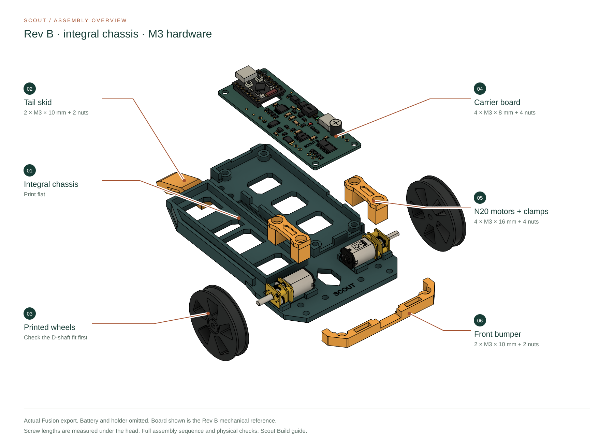
The mechanical layout
Get your bearings
The bumper and the word SCOUT mark the front. The swept tail skid is at the rear. Throughout these instructions, left and right mean Scout’s sides when looking forward toward the bumper.
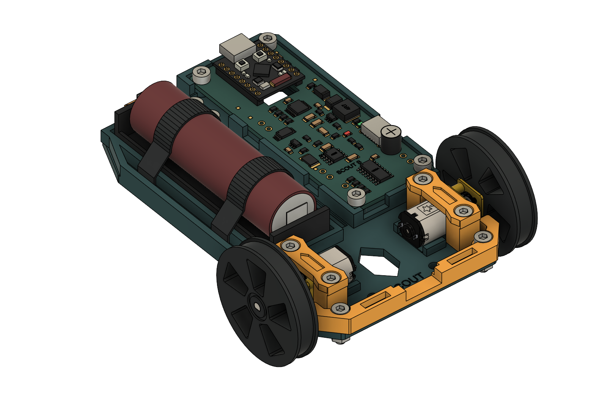
Remove the battery and unplug both USB connections before starting. Have the populated carrier board, two actual N20 motors and your chosen empty battery holder available for fit checks. Use the Board guide for electrical connections and power procedures.
Before assembly
Print seven parts
Use the Rev B M3 files together. Print one of each file below; the optional shaft-fit coupon is an extra test piece rather than part of the finished robot.
| Part | Quantity | Print orientation |
|---|---|---|
| Integral chassis | 1 | Flat |
| Left motor clamp | 1 | Bridge against the bed |
| Right motor clamp | 1 | Bridge against the bed |
| Front bumper | 1 | Flat |
| Tail skid | 1 | On its side |
| Left wheel | 1 | On a wheel face |
| Right wheel | 1 | On a wheel face |
Check the orientation in your slicer. The STL units are millimetres, and the files retain their component coordinates. Importing a file does not necessarily place its intended print face on the bed. The two named clamp files are identical, as are the two wheel files; keep the filenames together so the set remains easy to identify.
Clean loose debris from the holes, nut pockets and seating surfaces. Try a real M3 screw and nut before assembly. The design uses 3.4 mm clearance holes and 5.8 mm nut pockets, but your printed result is the fit that matters. Use the optional shaft-fit coupon on both actual motors before fitting the wheels.
No physically validated material and slicer profile is supplied for this Rev B set. Establish fit with your printer and material before committing to the complete build. Read the original Rev B print notes alongside these instructions.
One fastener system
Set out the M3 hardware
| Hardware | Quantity | Where it goes |
|---|---|---|
| M3 × 8 mm ISO 4762 socket-cap screw | 4 | Carrier board · Step 5 |
| M3 × 16 mm ISO 4762 socket-cap screw | 4 | Motor clamps · Steps 3 and 4 |
| M3 × 10 mm ISO 4762 socket-cap screw | 4 | Front bumper and tail skid · Steps 6 and 7 |
| M3 DIN 934 hex nut | 12 | 4 carrier, 4 motor clamps, 2 bumper, 2 tail skid |
Total: 12 screws and 12 nuts. Screw lengths are measured beneath the head. The specified nuts are 5.5 mm across flats and 2.4 mm thick. No washers are specified in the hardware list; the modeled carrier mounting uses none.
Tools to have nearby
A 2.5 mm Allen key fits every specified screw. Calipers help check the motor, holes and pockets. Keep your actual charging and programming cable plugs handy for the final unpowered clearance check.
Tighten gently
Start the screws before tightening the joint, and bring paired screws down evenly. No tightening torque is supplied for these printed parts. The current chassis uses M3 hardware throughout; older M2.5 clamp instructions belong to an earlier build.
Build in this order
Nine steps from parts to chassis
The underside carrier nuts and wire routes go in early because the board covers them later. Complete each check before adding the next part. These steps organize the existing CAD design for builders; they do not represent a physically validated assembly trial.
Sort the parts and check the shaft fit
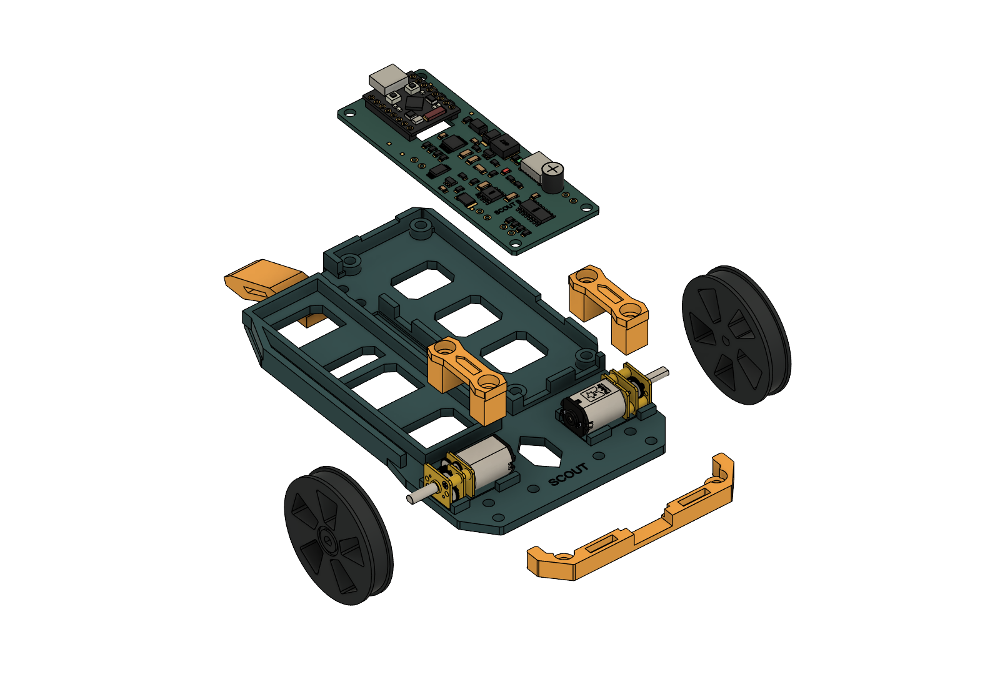
None. Sort 4 × M3 × 8 mm, 4 × M3 × 16 mm, 4 × M3 × 10 mm screws, and 12 M3 nuts.
- Identify all seven printed parts and compare their mating surfaces with the picture. Remove loose print debris from the seats, holes and nut pockets.
- Check a real screw and nut in their printed interfaces. Correct a poor print fit before fastening parts together.
- Align the coupon’s D-flat with each motor shaft and try the fit without forcing the gearbox. Resolve a tight or loose bore before fitting either wheel.
Ready to continue: all parts and hardware are identified, the printed interfaces accept their hardware, and both actual shafts have been checked.
The pictured motors use generic Pololu reference geometry. Confirm the dimensions of the motors you bought.
Fit the carrier nuts and plan the leads
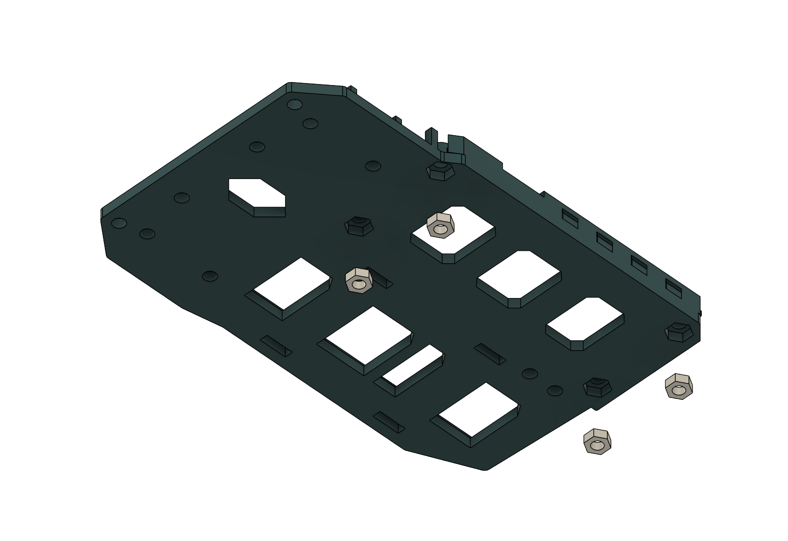
4 × M3 DIN 934 hex nuts. Keep these same nuts in place for Step 5.
- Turn the empty chassis over. Place one nut into each of the four carrier pockets, flat and aligned with the screw hole.
- Support the nuts while turning the chassis upright. An added retainer is not specified, so check that none has dropped out.
- Plan the motor, battery-holder and RUN-switch lead routes through the bay. Keep the board seats, mounting holes and wheel areas clear.
- Pass any prepared loose leads through before the board covers the bay. Leave room to install both motors, then recheck the routes in Step 5.
Ready to continue: four nuts sit beneath the carrier seats, and the planned leads cross no seating or fastening surface.
This is a routing step. Follow the Board guide for the electrical connections.
Secure the left motor and clamp
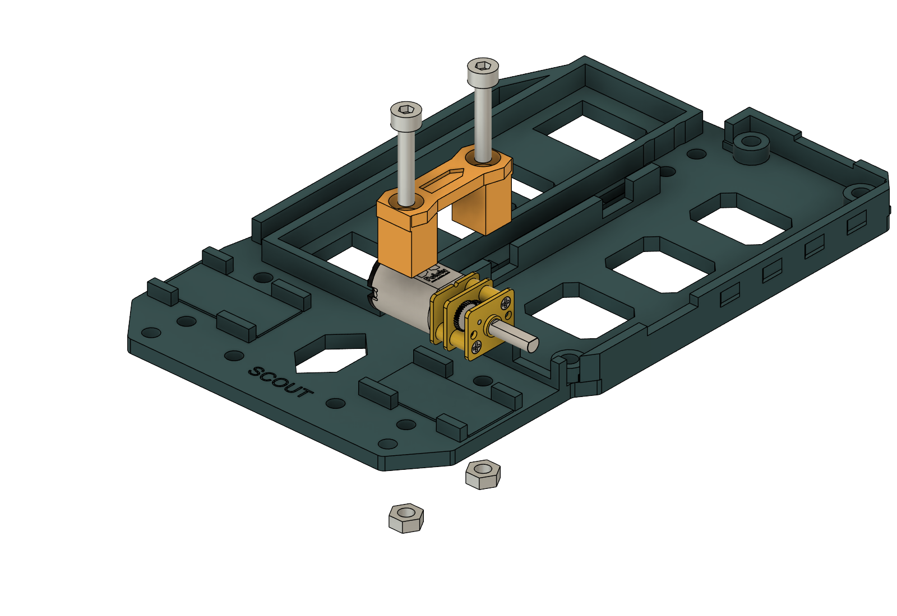
2 × M3 × 16 mm screws + 2 × M3 hex nuts.
- Place the left motor into its seat with the gearbox face and output shaft toward the outside of the chassis.
- Guide its paired leads toward the bay. Keep them out from under the motor, clamp and mounting holes.
- Place the clamp over the motor and align both holes. Insert the two screws from above and fit the nuts beneath the chassis.
- Tighten gently and evenly with the 2.5 mm Allen key until the motor is held in its seat.
Ready to continue: the left motor is held securely, its shaft is clear, and no wire is pinched.
Secure the right motor and clamp
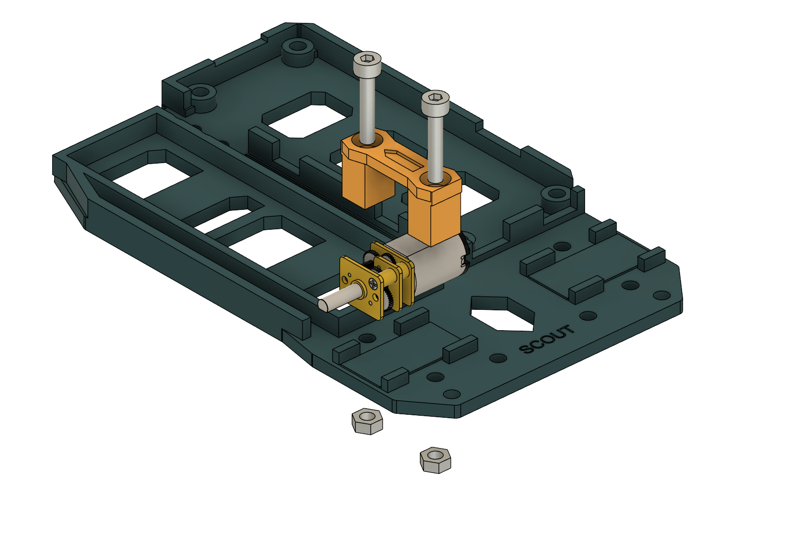
2 × M3 × 16 mm screws + 2 × M3 hex nuts.
- Seat the second motor on the right, with its output shaft facing outward.
- Route its lead pair toward the bay without crossing a clamp seat or screw hole.
- Fit the clamp, insert both screws from above, and fit the two nuts below the chassis floor. Tighten the screws gently and evenly.
- Check both motors together. Their shafts should be accessible for the wheels, and both lead pairs should remain free of the clamps.
Ready to continue: both motors are seated and clamped, with all four clamp screws and four clamp nuts installed.
Seat and fasten the carrier board
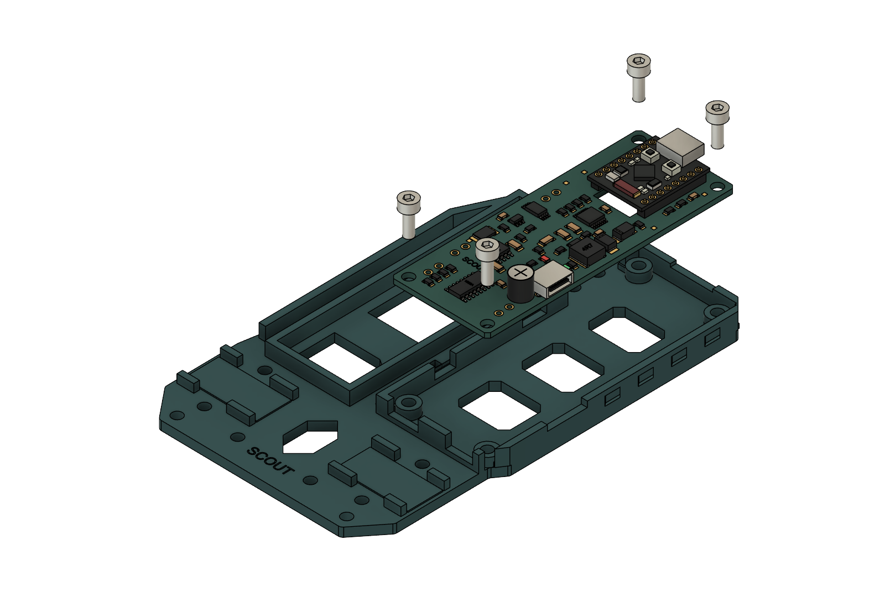
4 × M3 × 8 mm screws. Reuse the 4 carrier nuts from Step 2. No washers.
- Compare your actual board, components and connectors with the bay. For Carrier C v10, check its changed component placement before treating this Rev B picture as a fit guide.
- Re-seat the four underside nuts and check the leads again. Orient the board with the SuperMini programming connector toward the rear.
- Lower the board onto all four integral seats. Its holes should align, and the board should sit flat without being pulled down by screws.
- Start all four screws into their nuts, then tighten gently from above. Check beneath and around the board for trapped wires, solder tails or components touching the chassis.
Ready to continue: the board rests on all four seats, all four screws engage their nuts, and the actual board and leads clear the chassis.
Do not use screw pressure to overcome a clearance problem. No approved added spacer or washer stack is supplied for this mounting.
Attach the front bumper
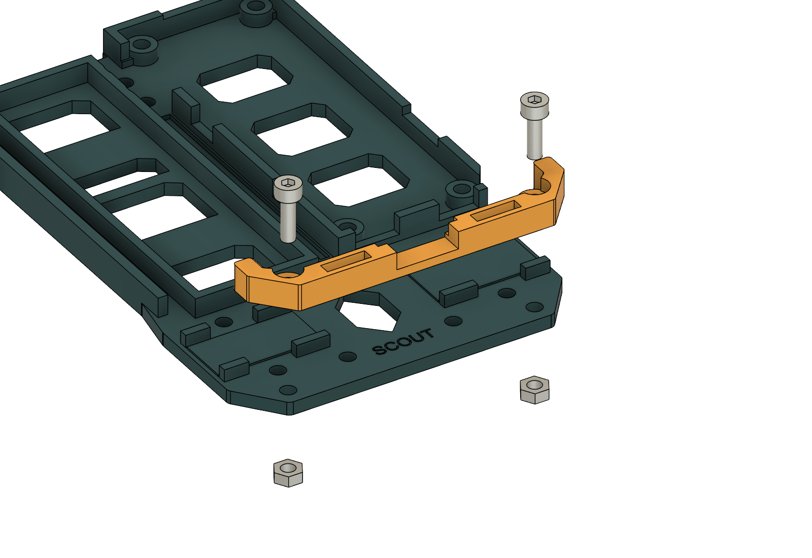
2 × M3 × 10 mm screws + 2 × M3 hex nuts.
- Place the Rev B bumper against the front of the chassis and align its two attachment holes.
- Insert the screws from above and fit the nuts beneath. Start both screws before tightening either one.
- Tighten gently and evenly, keeping the mating surfaces seated and the nearby motor leads clear.
Ready to continue: the bumper is seated and held by both screws and nuts, with no nearby lead pinched.
Want a face or camera instead? See the optional OLED and ESP32-CAM replacement bumpers and their separate assembly instructions before choosing the front attachment.
Attach the tail skid
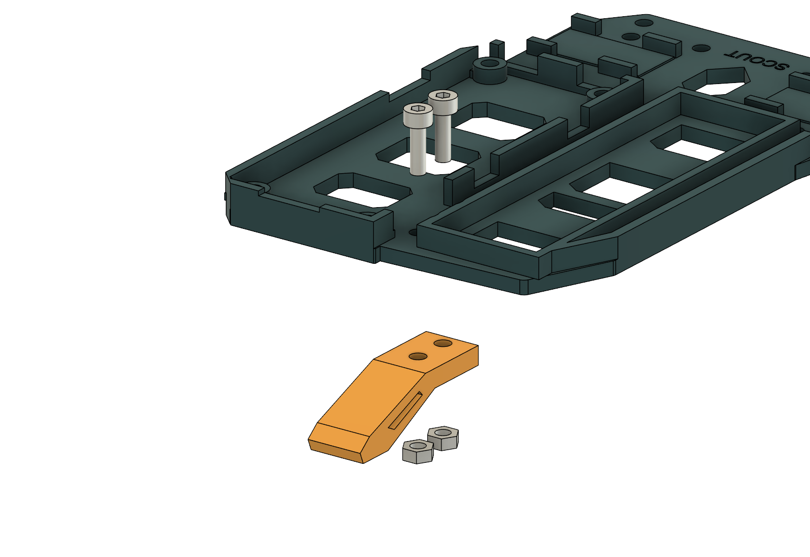
2 × M3 × 10 mm screws + 2 × M3 hex nuts.
- Position the skid beneath the rear attachment points and align both holes.
- Insert the screws from above. Fit the nuts beneath the skid and tighten gently while keeping the skid seated.
- With the carrier installed, try the Allen key on both screws. Keep wires out of the vertical tool path.
Ready to continue: the tail skid is secure, its toe faces the ground, and both screw heads remain accessible.
The model passed an 8 mm diameter driver-clearance check. Confirm the result with your actual tool, printed parts and board.
Fit the wheels
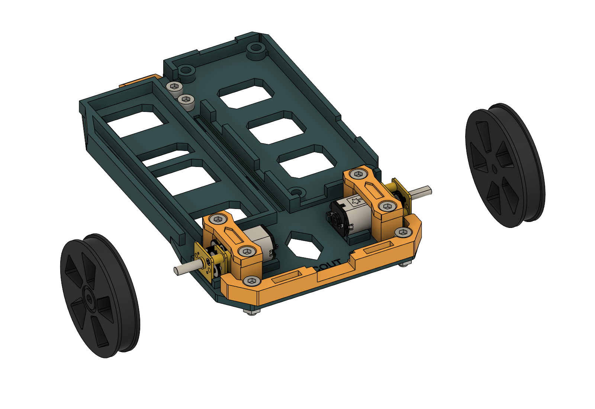
None specified. The modeled wheel interface is a D-bore press fit.
- Confirm that the shaft-fit check passed on both motors. Align each wheel’s D-shaped bore with its shaft flat.
- Fit the wheel carefully while supporting the motor. Do not hammer it on or force the gearbox to accept a tight bore.
- Rotate each wheel gently through a full revolution. Check clearance around the chassis, clamps and bumper.
- Check that the wheels stay on during gentle handling. Correct a tight or loose fit before proceeding.
Ready to continue: both wheels fit their actual shafts, stay in place during a gentle hand check, and turn without rubbing.
No retaining screw, adhesive, clip or tested retention force is specified. The printed fit still needs a physical check.
Trial-fit the holder and check the whole assembly
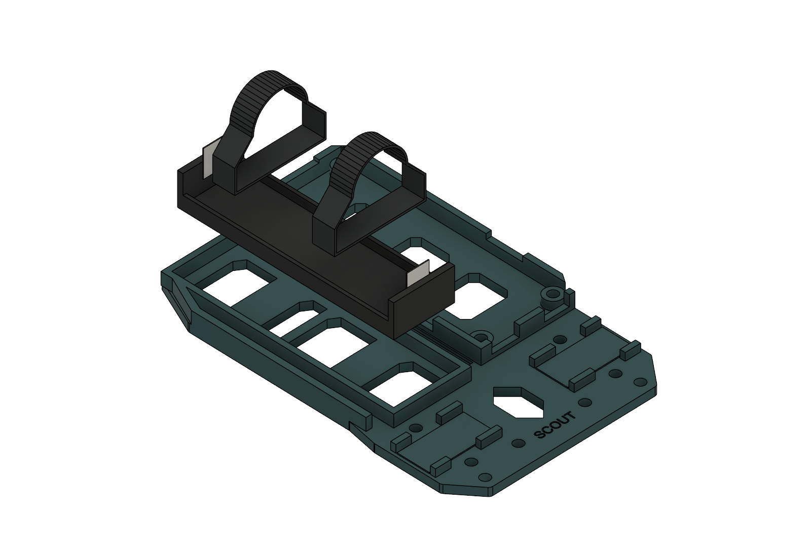
No additional M3 hardware specified. Check the installed total: 12 screws and 12 nuts.
- Trial-fit the actual empty battery holder. Compare it with the bay and floor-slot arrangement shown. Establish a suitable retention method with your chosen holder and straps; this reference view does not establish a tested attachment.
- Count four M3 × 16 mm clamp screws, four M3 × 8 mm board screws, four M3 × 10 mm bumper/skid screws, and twelve nuts. Check every joint by hand without overtightening.
- Set the chassis on a level surface. Check the wheel gaps, skid contact and lead routes. Keep loose leads away from the wheels.
- With the robot still unpowered, insert and remove your actual charging and programming plugs. Check both tail-screw tool paths again.
- Resolve the battery-holder retention, offboard RUN-switch mounting, wire retention and any Carrier C clearance differences before powered commissioning.
Mechanical handoff: the hardware count matches, wheels and skid clear their surroundings, and actual tool and plug access has been checked. Any unresolved fit or attachment is corrected before adding power.
Keep the cell removed while moving to the Board guide for electrical checks. Use the Code guide when you are ready to load the matching firmware.
Connect the whole robot
One picture for all the wiring
Use this component-side view for the current Carrier C v10 / Silk 03. It shows the battery holder, both motors, the external RUN switch and the optional OLED together. Remove the cell and unplug both USB cables before soldering or changing any connection. Left and right mean Scout's sides when looking forward toward the bumper.
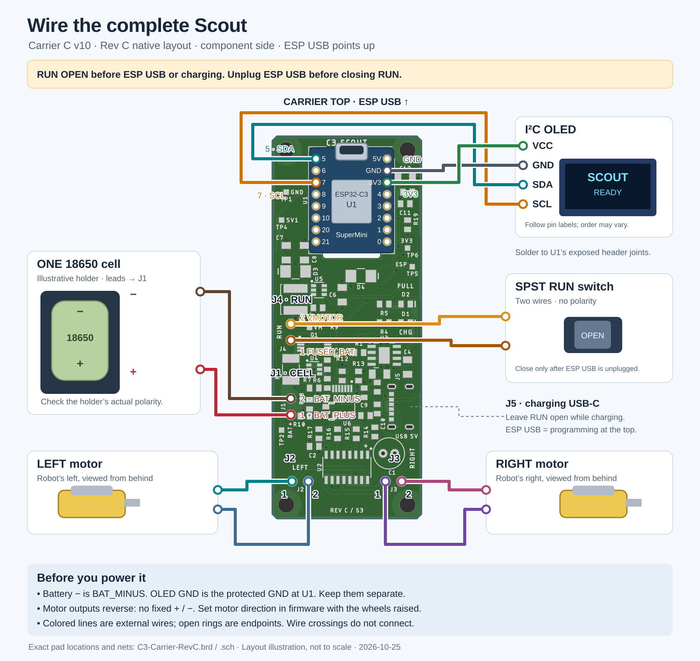

- Battery holder → J1. Positive goes to pad 1 / BAT_PLUS (lower pad in this view); negative goes to pad 2 / BAT_MINUS (upper pad). Use one 18650 cell. BAT_MINUS is the raw cell return: never join it directly to protected GND.
- Left motor → J2; right motor → J3. Each motor uses both pads of its connector. These are reversing motor outputs, so neither lead is a permanent ground. Check each motor's direction with the wheels raised and use the controller's saved direction setting if needed.
- RUN switch → J4. Connect a two-terminal on/off switch between pad 1 / FUSED_BAT (lower) and pad 2 / VMOTOR (upper). Open is off; closed is RUN. This is a two-wire connection across J4, with no ground wire.
- Optional OLED → U1 header solder joints. VCC goes to 3V3, GND to protected GND, SDA to GPIO5 and SCL to GPIO7. Follow the OLED's printed signal labels; its connector order can vary. The carrier has no separate OLED connector. See the enlarged SuperMini pinout for all header positions.
- Retain and inspect the leads. Leave service slack, keep wires clear of wheels and screw access, and check battery polarity and solder joints before inserting the cell. Continue with the first-power procedure.
What the drawings establish
Use the model, then check the real parts
The Rev B assembly reported no solid interferences or timeline issues, and the standalone chassis and board files were reopened in Fusion. Tool and representative USB-plug envelopes also cleared the modeled assembly. Those checks help you understand the layout; they do not establish the fit of a particular print, motor, battery holder or cable.
The pictured populated board is Rev B. Carrier C v10 component placement still needs a mechanical fit check. Flexible straps and hidden alternative modules were excluded from the interference checks.
For the underlying results, read the mechanical checks, service-access checks and standalone Fusion reopen checks.
Make it your own
Build files and editable CAD
Use the print package for a matching set of STL files and hardware notes. Choose the CAD package to inspect or adapt the chassis in Fusion or another STEP-compatible design tool.
Download Rev B print set Download Fusion and STEP CAD
Individual print files
Individual CAD files
- Complete Rev B assembly: Fusion · STEP
- Standalone integral chassis: Fusion · STEP
- Standalone populated Rev B board: Fusion · STEP
The complete assembly retains the full parametric history. The standalone populated board is a component/body snapshot of Rev B; it does not represent Carrier C v10 placement.